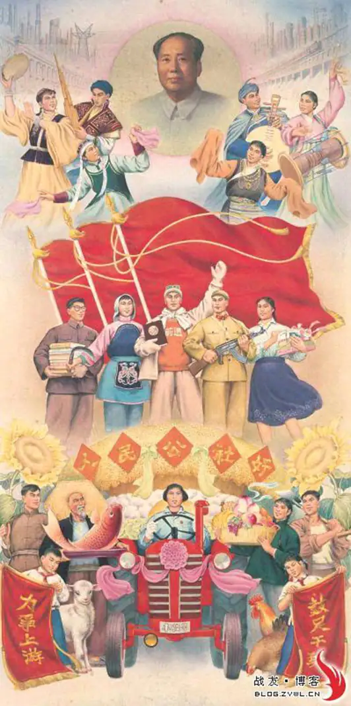
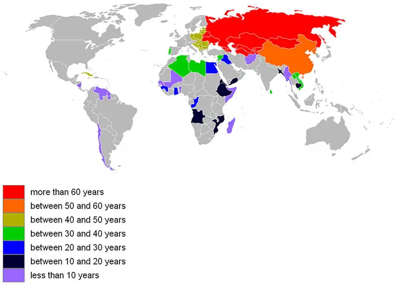
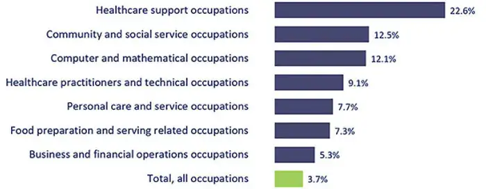
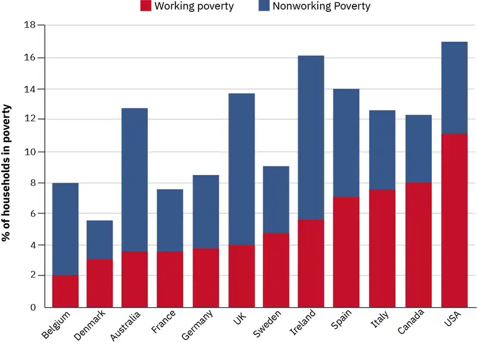

Chapter 18: Work and the Economy¶
Introduction¶
What if the U.S. economy thrived solely on basic bartering instead of its bustling agricultural and technological goods? Would you still see a busy building like the one shown in Figure 18.1?
In sociology, economy refers to the social institution through which a society’s resources are exchanged and managed. The earliest economies were based on trade, which is often a simple exchange in which people traded one item for another. While today’s economic activities are more complex than those early trades, the underlying goals remain the same: exchanging goods and services allows individuals to meet their needs and wants. In 1893, Émile Durkheim described what he called “mechanical” and “organic” solidarity that correlates to a society’s economy. Mechanical solidarity exists in simpler societies where social cohesion comes from sharing similar work, education, and religion. Organic solidarity arises out of the mutual interdependence created by the specialization of work. The complex U.S. economy, and the economies of other industrialized nations, meet the definition of organic solidarity. Most individuals perform a specialized task to earn money they use to trade for goods and services provided by others who perform different specialized tasks. In a simplified example, an elementary school teacher relies on farmers for food, doctors for healthcare, carpenters to build shelter, and so on. The farmers, doctors, and carpenters all rely on the teacher to educate their children. They are all dependent on each other and their work.
Economy is one of human society’s earliest social structures. Our earliest forms of writing (such as Sumerian clay tablets) were developed to record transactions, payments, and debts between merchants. As societies grow and change, so do their economies. The economy of a small farming community is very different from the economy of a large nation with advanced technology. In this chapter, we will examine different types of economic systems and how they have functioned in various societies.
Detroit, once the roaring headquarters of the country’s large and profitable automotive industry, had already been in a population decline for several decades as auto manufacturing jobs were being outsourced to other countries and foreign car brands began to take increasing portions of U.S. market share. According to State of Michigan population data (State of Michigan, n.d.), Detroit was home to approximately 1.85 million residents in 1950, which dwindled to slightly more than 700,000 in 2010 following the economic crash. The drastic reduction took its toll on the city. It is estimated that a third of the buildings in Detroit have been abandoned. The current average home price hovers around $7,000, while homes nationwide sell on average for around $200,000. The city has filed for bankruptcy, and its unemployment rate hovers around 30 percent.
The Wage Gap in the United States¶
The Equal Pay Act, passed by the U.S. Congress in 1963, was designed to reduce the wage gap between men and women. The act in essence required employers to pay equal wages to men and women who were performing substantially similar jobs. However, more than fifty years later, women continue to make less money than their male counterparts. According to a report released by the White House in 2013, full-time working women made just 77 cents for every dollar a man made (National Equal Pay Taskforce 2013). Seven years later, the gap had only closed by four cents, with women making 81 cents for every dollar a man makes (Payscale 2020).
A part of the White House report read, “This significant gap is more than a statistic—it has real-life consequences. When women, who make up nearly half the workforce, bring home less money each day, it means they have less for the everyday needs of their families, and over a lifetime of work, far less savings for retirement.”
As shocking as it is, the gap actually widens when we add race and ethnicity to the picture. For example, African American women make on average 64 cents for every dollar a White male makes. Latina women make 56 cents, or 44 percent less, for every dollar a White man makes. African American and Latino men also make notably less than White men. Asian Americans tend to be the only minority that earns as much as or more than White men.
Certain professions have their own differences in wage gaps, even those whose participants have higher levels of education and supposedly a more merit-based method of promotion and credit. For example, U.S. and Canadian scientists have a significant wage gap that begins as soon as people enter the workforce. For example, of the PhD recipients that have jobs lined up after earning their degree, men reported an initial salary average of $92,000 per year, while women's was only $72,500. Men with permanent jobs in the life sciences reported an expected median salary of $87,000, compared with $80,000 for women. In mathematics and computer sciences, men reported an expected median salary of $125,000; for women, that figure was $101,500 (Woolston 2021).
Recent Economic Conditions¶
In 2015, the United States continued its recovery from the “Great Recession,” arguably the worst economic downturn since the stock market collapse in 1929 and the Great Depression that ensued.
The 2008 recession was brought on by aggressive lending, extremely risky behavior by investment firms, and lax oversight by the government. During this time, banks provided mortgages to people with poor credit histories, sometimes with deceptively low introductory interest rates. When the rates rose, borrowers' mortgage payments increased to the point where they couldn't make payments. At the same time, investment firms had purchased these risky mortgages in the form of large bundled investments worth billions of dollars each (mortgage-backed securities or MBS). Rating agencies were supposed to rate mortgage securities according to their level of risk, but they typically rated all MBS as high-quality no matter what types of mortgages they contained. When the mortgages defaulted, the investment firms' holdings went down. The massive rate of loan defaults put a strain on the financial institutions that had made the loans as well as those that had purchased the MBS, and this stress rippled throughout the entire economy and around the globe.
With the entire financial system on the verge of permanent damage, the U.S. government bailed out many of these firms and provided support to other industries, such as airlines and automobile companies. But the Recession couldn't be stopped. The United States fell into a period of high and prolonged unemployment, extreme reductions in wealth (except at the very top), stagnant wages, and loss of value in personal property (houses and land).
Starting in 2009, however, employment began to tick back up as companies found their footing. By 2012, most of the country's employment rates were similar to the levels prior to the Great Recession. However, for most segments of the population, median income had not increased, and in fact it has receded in many cases. The size, income, and wealth of the middle class have been declining since the 1970s— effects that were perhaps hastened by the recession. Today, wealth is distributed inequitably at the top. Corporate profits have increased more than 141 percent, and CEO pay has risen by more than 298 percent.
Although wages had not increased, and certain parts of the economy, such as brick-and-mortar retail (department stores and similar chains) were doing poorly, the economy as a whole grew from the time after the Great Recession through 2020. Unemployment reached a historic low in late 2019. COVID-19 changed all that. As you may have experienced yourself, entire industries suffered incredible losses as they were forced to shut down or severely reduce operations. Some people were laid off from their jobs, while others had their hours or wages reduced. Unemployment skyrocketed again, reaching a new high of nearly 15 percent, only about six months after it had been at its record low. Industries as diverse as hospitality and mining reported massive decreases in employment, and part-time workers in particular were hard hit. By early 2021, the overall unemployment rate had returned to generally normal levels. The impact on those who had gone without work for so long, however, was significant (Congressional Research Service 2021).
18.1 Economic Systems¶
Learning Objectives
By the end of this section, you should be able to:
- Differentiate types of economic systems and their historical development
- Describe capitalism and socialism both in theory and in practice
- Discuss the ways functionalists, conflict theorists, and symbolic interactionists view the economy and work
The dominant economic systems of the modern era are capitalism and socialism, and there have been many variations of each system across the globe. Countries have switched systems as their rulers and economic fortunes have changed. For example, Russia has been transitioning to a market-based economy since the fall of communism in that region of the world. Vietnam, where the economy was devastated by the Vietnam War, restructured to a state-run economy in response, and more recently has been moving toward a socialist-style market economy. In the past, other economic systems reflected the societies that formed them. Many of these earlier systems lasted centuries. These changes in economies raise many questions for sociologists. What are these older economic systems? How did they develop? Why did they fade away? What are the similarities and differences between older economic systems and modern ones?
Economics of Agricultural, Industrial, and Postindustrial Societies¶
Our earliest ancestors lived as hunter-gatherers. Small groups of extended families roamed from place to place looking for subsistence. They would settle in an area for a brief time when there were abundant resources. They hunted animals for their meat and gathered wild fruits, vegetables, and cereals. They ate what they caught or gathered their goods as soon as possible, because they had no way of preserving or transporting it. Once the resources of an area ran low, the group had to move on, and everything they owned had to travel with them. Food reserves only consisted of what they could carry. Many sociologists contend that hunter-gatherers did not have a true economy, because groups did not typically trade with other groups due to the scarcity of goods.
The Agricultural Revolution¶
The first true economies arrived when people started raising crops and domesticating animals. Although there is still a great deal of disagreement among archeologists as to the exact timeline, research indicates that agriculture began independently and at different times in several places around the world. The earliest agriculture was in the Fertile Crescent in the Middle East around 11,000–10,000 years ago. Next were the valleys of the Indus, Yangtze, and Yellow rivers in India and China, between 10,000 and 9,000 years ago. The people living in the highlands of New Guinea developed agriculture between 9,000 and 6,000 years ago, while people were farming in Sub-Saharan Africa between 5,000 and 4,000 years ago. Agriculture developed later in the western hemisphere, arising in what would become the eastern United States, central Mexico, and northern South America between 5,000 and 3,000 years ago (Diamond 2003).
![Figure is a Timeline of Agricultural Development. The timeline covers the year range of 12000 B.C.E. to 1000 C.E. Between the years 11000 B.C.E. and 10000 B.C.E., Egypt and Mesopotamia began developing agricultural techniques. In the 9000s B.C.E. Asia began developing agricultural techniques. Between the years 8000 B.C.E. and 6000 B.C.E., New Guinea began developing agricultural techniques. In the 5000s B.C.E., Sub-Saharan Africa began developing agricultural techniques. Between the years 4000 B.C.E. and 3000 B.C.E., the Americas began developing agricultural techniques.](img/table-18-01-01.webp)
Agriculture began with the simplest of technologies—for example, a pointed stick to break up the soil—but really took off when people harnessed animals to pull an even more efficient tool for the same task: a plow. With this new technology, one family could grow enough crops not only to feed themselves but also to feed others. Knowing there would be abundant food each year as long as crops were tended led people to abandon the nomadic life of hunter-gatherers and settle down to farm.
The improved efficiency in food production meant that not everyone had to toil all day in the fields. As agriculture grew, new jobs emerged, along with new technologies. Excess crops needed to be stored, processed, protected, and transported. Farming equipment and irrigation systems needed to be built and maintained. Wild animals needed to be domesticated and herds shepherded. Economies began to develop because people now had goods and services to trade. At the same time, farmers eventually came to labor for the ruling class.
As more people specialized in nonfarming jobs, villages grew into towns and then into cities. Urban areas created the need for administrators and public servants. Disputes over ownership, payments, debts, compensation for damages, and the like led to the need for laws and courts—and the judges, clerks, lawyers, and police who administered and enforced those laws.
At first, most goods and services were traded as gifts or through bartering between small social groups (Mauss 1922). Exchanging one form of goods or services for another was known as bartering. This system only works when one person happens to have something the other person needs at the same time. To solve this problem, people developed the idea of a means of exchange that could be used at any time: that is, money. Money refers to an object that a society agrees to assign a value to so it can be exchanged for payment. In early economies, money was often objects like cowry shells, rice, barley, or even rum. Precious metals quickly became the preferred means of exchange in many cultures because of their durability and portability. The first coins were minted in Lydia in what is now Turkey around 650–600 B.C.E. (Goldsborough 2010). Early legal codes established the value of money and the rates of exchange for various commodities. They also established the rules for inheritance, fines as penalties for crimes, and how property was to be divided and taxed (Horne 1915). A symbolic interactionist would note that bartering and money are systems of symbolic exchange. Monetary objects took on a symbolic meaning, one that carries into our modern-day use of cash, checks, and debit cards.
Sociology in the Real World: The Woman Who Lives without Money
Imagine having no money. If you wanted some french fries, needed a new pair of shoes, or were due to get an oil change for your car, how would you get those goods and services?
This isn’t just a theoretical question. Think about it. What do those on the outskirts of society do in these situations? Think of someone escaping domestic abuse who gave up everything and has no resources. Or an immigrant who wants to build a new life but who had to leave another life behind to find that opportunity. Or a person experiencing homelessness who simply wants a meal to eat.
This last example, homelessness, is what caused Heidemarie Schwermer to give up money. She was a divorced high school teacher in Germany, and her life took a turn when she relocated her children to a rural town with a significant homeless population. She began to question what serves as currency in a society and decided to try something new.
Schwermer founded a business called Gib und Nimm—in English, “give and take.” It operated on a moneyless basis and strived to facilitate people swapping goods and services for other goods and services—no cash allowed (Schwermer 2007). What began as a short experiment has become a new way of life. Schwermer says the change has helped her focus on people’s inner value instead of their outward wealth. She wrote two books that tell her story (she’s donated all proceeds to charity) and, most importantly, a richness in her life she was unable to attain with money.
How might our three sociological perspectives view her actions? What would most interest them about her unconventional ways? Would a functionalist consider her aberration of norms a social dysfunction that upsets the normal balance? How would a conflict theorist place her in the social hierarchy? What might a symbolic interactionist make of her choice not to use money—such an important symbol in the modern world?
What do you make of Gib und Nimm?
As city-states grew into countries and countries grew into empires, their economies grew as well. When large empires broke up, their economies broke up too. The governments of newly formed nations sought to protect and increase their markets. They financed voyages of discovery to find new markets and resources all over the world, which ushered in a rapid progression of economic development.
Colonies were established to secure these markets, and wars were financed to take over territory. These ventures were funded in part by raising capital from investors who were paid back from the goods obtained. Governments and private citizens also set up large trading companies that financed their enterprises around the world by selling stocks and bonds.
Governments tried to protect their share of the markets by developing a system called mercantilism. Mercantilism is an economic policy based on accumulating silver and gold by controlling colonial and foreign markets through taxes and other charges. The resulting restrictive practices and exacting demands included monopolies, bans on certain goods, high tariffs, and exclusivity requirements. Mercantilist governments also promoted manufacturing and, with the ability to fund technological improvements, they helped create the equipment that led to the Industrial Revolution.
The Industrial Revolution¶
Until the end of the eighteenth century, most manufacturing was done by manual labor. This changed as inventors devised machines to manufacture goods. A small number of innovations led to a large number of changes in the British economy. In the textile industries, the spinning of cotton, worsted yarn, and flax could be done more quickly and less expensively using new machines with names like the Spinning Jenny and the Spinning Mule (Bond 2003). Another important innovation was made in the production of iron: Coke from coal could now be used in all stages of smelting rather than charcoal from wood, which dramatically lowered the cost of iron production while increasing availability (Bond 2003). James Watt ushered in what many scholars recognize as the greatest change, revolutionizing transportation and thereby the entire production of goods with his improved steam engine.
As people moved to cities to fill factory jobs, factory production also changed. Workers did their jobs in assembly lines and were trained to complete only one or two steps in the manufacturing process. These advances meant that more finished goods could be manufactured with more efficiency and speed than ever before.
The Industrial Revolution also changed agricultural practices. Until that time, many people practiced subsistence farming in which they produced only enough to feed themselves and pay their taxes. New technology introduced gasoline-powered farm tools such as tractors, seed drills, threshers, and combine harvesters. Farmers were encouraged to plant large fields of a single crop to maximize profits. With improved transportation and the invention of refrigeration, produce could be shipped safely all over the world.
The Industrial Revolution modernized the world. With growing resources came growing societies and economies. Between 1800 and 2000, the world’s population grew sixfold, while per capita income saw a tenfold jump (Maddison 2003).
While many people's lives were improving, the Industrial Revolution also birthed many societal problems. There were inequalities in the system. Owners amassed vast fortunes while laborers, including young children, toiled for long hours in unsafe conditions. Workers’ rights, wage protection, and safe work environments are issues that arose during this period and remain concerns today.
Postindustrial Societies and the Information Age¶
Postindustrial societies, also known as information societies, have evolved in modernized nations. One of the most valuable goods of the modern era is information. Those who have the means to produce, store, and disseminate information are leaders in this type of society.
One way scholars understand the development of different types of societies (like agricultural, industrial, and postindustrial) is by examining their economies in terms of four sectors: primary, secondary, tertiary, and quaternary. Each has a different focus. The primary sector extracts and produces raw materials (like metals and crops). The secondary sector turns those raw materials into finished goods. The tertiary sector provides services: child care, healthcare, and money management. Finally, the quaternary sector produces ideas; these include the research that leads to new technologies, the management of information, and a society’s highest levels of education and the arts (Kenessey 1987).
In underdeveloped countries, the majority of the people work in the primary sector. As economies develop, more and more people are employed in the secondary sector. In well-developed economies, such as those in the United States, Japan, and Western Europe, the majority of the workforce is employed in service industries. In the United States, for example, almost 80 percent of the workforce is employed in the tertiary sector (U.S. Bureau of Labor Statistics 2011).
The rapid increase in computer use in all aspects of daily life is a main reason for the transition to an information economy. Fewer people are needed to work in factories because computerized robots now handle many of the tasks. Other manufacturing jobs have been outsourced to less-developed countries as a result of the developing global economy. The growth of the Internet has created industries that exist almost entirely online. Within industries, technology continues to change how goods are produced. For instance, the music and film industries used to produce physical products like CDs and DVDs for distribution. Now those goods are increasingly produced digitally and streamed or downloaded at a much lower physical manufacturing cost. Information and the means to use it creatively have become commodities in a postindustrial economy.
Capitalism¶
Scholars don’t always agree on a single definition of capitalism. For our purposes, we will define capitalism as an economic system in which there is private ownership (as opposed to state ownership) and where there is an impetus to produce profit, and thereby wealth. This is the type of economy in place in the United States today. Under capitalism, people invest capital (money or property invested in a business venture) in a business to produce a product or service that can be sold in a market to consumers. The investors in the company are generally entitled to a share of any profit made on sales after the costs of production and distribution are taken out. These investors often reinvest their profits to improve and expand the business or acquire new ones. To illustrate how this works, consider this example. Sarah, Antonio, and Chris each invest $250,000 into a start-up company that offers an innovative baby product. When the company nets $1 million in profits its first year, a portion of that profit goes back to Sarah, Antonio, and Chris as a return on their investment. Sarah reinvests with the same company to fund the development of a second product line, Antonio uses his return to help another start-up in the technology sector, and Chris buys a small yacht for vacations.
To provide their product or service, owners hire workers to whom they pay wages. The cost of raw materials, the retail price they charge consumers, and the amount they pay in wages are determined through the law of supply and demand and by competition. When demand exceeds supply, prices tend to rise. When supply exceeds demand, prices tend to fall. When multiple businesses market similar products and services to the same buyers, there is competition. Competition can be good for consumers because it can lead to lower prices and higher quality as businesses try to get consumers to buy from them rather than from their competitors.
Wages tend to be set in a similar way. People who have talents, skills, education, or training that is in short supply and is needed by businesses tend to earn more than people without comparable skills. Competition in the workforce helps determine how much people will be paid. In times when many people are unemployed and jobs are scarce, people are often willing to accept less than they would when their services are in high demand. In this scenario, businesses are able to maintain or increase profits by not increasing workers' wages.
Capitalism in Practice¶
As capitalists began to dominate the economies of many countries during the Industrial Revolution, the rapid growth of businesses and their tremendous profitability gave some owners the capital they needed to create enormous corporations that could monopolize an entire industry. Many companies controlled all aspects of the production cycle for their industry, from the raw materials, to the production, to the stores in which they were sold. These companies were able to use their wealth to buy out or stifle any competition.
In the United States, the predatory tactics used by these large monopolies caused the government to take action. Starting in the late 1800s, the government passed a series of laws that broke up monopolies and regulated how key industries—such as transportation, steel production, and oil and gas exploration and refining—could conduct business.
The United States is considered a capitalist country. However, the U.S. government has a great deal of influence on private companies through the laws it passes and the regulations enforced by government agencies. Through taxes, regulations on wages, guidelines to protect worker safety and the environment, plus financial rules for banks and investment firms, the government exerts a certain amount of control over how all companies do business. State and federal governments also own, operate, or control large parts of certain industries, such as the post office, schools, hospitals, highways and railroads, and many water, sewer, and power utilities. Debate over the extent to which the government should be involved in the economy remains an issue of contention today. Some criticize such involvements as socialism (a type of state-run economy), while others believe intervention is necessary to protect the rights of workers and the well-being of the general population.
Socialism¶

Socialism is an economic system in which there is government ownership (often referred to as “state run”) of goods and their production, with an impetus to share work and wealth equally among the members of a society. Under socialism, everything that people produce, including services, is considered a social product. Everyone who contributes to the production of a good or to providing a service is entitled to a share in any benefits that come from its sale or use. To make sure all members of society get their fair share, governments must be able to control property, production, and distribution.
The focus in socialism is on benefitting society, whereas capitalism seeks to benefit the individual. Socialists claim that a capitalistic economy leads to inequality, with unfair distribution of wealth and individuals who use their power at the expense of society. Socialism strives, ideally, to control the economy to avoid the problems inherent in capitalism.
Within socialism, there are diverging views on the extent to which the economy should be controlled. One extreme believes all but the most personal items are public property. Other socialists believe only essential services such as healthcare, education, and utilities (electrical power, telecommunications, and sewage) need direct control. Under this form of socialism, farms, small shops, and businesses can be privately owned but are subject to government regulation.
The other area on which socialists disagree is on what level society should exert its control. In communist countries like the former Soviet Union, China, Vietnam, and North Korea, the national government exerts control over the economy centrally. They had the power to tell all businesses what to produce, how much to produce, and what to charge for it. Other socialists believe control should be decentralized so it can be exerted by those most affected by the industries being controlled. An example of this would be a town collectively owning and managing the businesses on which its residents depend.
Because of challenges in their economies, several of these communist countries have moved from central planning to letting market forces help determine many production and pricing decisions. Market socialism describes a subtype of socialism that adopts certain traits of capitalism, like allowing limited private ownership or consulting market demands. This could involve situations like profits generated by a company going directly to the employees of the company or being used as public funds (Gregory and Stuart 2003). Many Eastern European and some South American countries have mixed economies. Key industries are nationalized and directly controlled by the government; however, most businesses are privately owned and regulated by the government.
Organized socialism never became powerful in the United States. The success of labor unions and the government in securing workers’ rights, joined with the high standard of living enjoyed by most of the workforce, made socialism less appealing than the controlled capitalism practiced here.

Socialism in Practice¶
As with capitalism, the basic ideas behind socialism go far back in history. Plato, in ancient Greece, suggested a republic in which people shared their material goods. Early Christian communities believed in common ownership, as did the systems of monasteries set up by various religious orders. Many of the leaders of the French Revolution called for the abolition of all private property, not just the estates of the aristocracy they had overthrown. Thomas More's Utopia, published in 1516, imagined a society with little private property and mandatory labor on a communal farm. A utopia has since come to mean an imagined place or situation in which everything is perfect. Most experimental utopian communities had the abolition of private property as a founding principle.
Modern socialism really began as a reaction to the excesses of uncontrolled industrial capitalism in the 1800s and 1900s. The enormous wealth and lavish lifestyles enjoyed by owners contrasted sharply with the miserable conditions of the workers.
Some of the first great sociological thinkers studied the rise of socialism. Max Weber admired some aspects of socialism, especially its rationalism and how it could help social reform, but he worried that letting the government have complete control could result in an "iron cage of future bondage" from which there is no escape (Greisman and Ritzer 1981).
Pierre-Joseph Proudhon (1809−1865) was another early socialist who thought socialism could be used to create utopian communities. In his 1840 book, What Is Property?, he famously stated that “property is theft” (Proudhon 1840). By this he meant that if an owner did not work to produce or earn the property, then the owner was stealing it from those who did. Proudhon believed economies could work using a principle called mutualism, under which individuals and cooperative groups would exchange products with one another on the basis of mutually satisfactory contracts (Proudhon 1840).
By far the most important influential thinker on socialism is Karl Marx. Through his own writings and those with his collaborator, industrialist Friedrich Engels, Marx used a scientific analytical process to show that throughout history, the resolution of class struggles caused changes in economies. He saw the relationships evolving from slave and owner, to serf and lord, to journeyman and master, to worker and owner. Neither Marx nor Engels thought socialism could be used to set up small utopian communities. Rather, they believed a socialist society would be created after workers rebelled against capitalistic owners and seized the means of production. They felt industrial capitalism was a necessary step that raised the level of production in society to a point it could progress to a socialist and then communist state (Marx and Engels 1848). These ideas form the basis of the sociological perspective of social conflict theory.
Sociology in the Real World: Politicians, Socialism, and Changing Perspectives
In most Presidential elections, as well as some state and local contests, one or more of the candidates is likely to be insulted with a term meant to evoke fear and indicate their lack of patriotism: They are called a socialist.
With a few exceptions throughout U.S. history, mainstream politicians would have taken efforts to shed this label. It may have brought to mind failed or totalitarian countries, where people had fewer freedoms and generally less prosperity than in America.
More recently, however, some political figures seem more comfortable with the term. Most notably, Vermont Senator Bernie Sanders has accepted the term "democratic socialist," as has New York Representative Alexandra Ocasio-Cortez. They ascribe to government involvement models similar to those of some European countries. They advocate for policies like student loan forgiveness, free public college, universal healthcare, elimination of for-profit prisons, and so on. In some cases, they advocate for breakups or government involvement in some corporate-dominated industries, such as power utilities. They also note that many semi-socialist societies, such as Germany and the U.K, are among the world's largest economies, with plenty of economic opportunity and – if the ability to become rich is one measure – plenty of millionaires and billionaires.
Beyond the political damage that may be associated with socialism, many people in America do not like the idea of government involvement in private industry. Choice and unlimited opportunity are parts of the fabric of the American story, and large corporations have had positive impacts on our lifestyle. But some of those notions are changing. Many people from different political backgrounds are decrying income inequality, which, as has been described elsewhere in this text, is higher than ever in the U.S.
Another aspect of the U.S. economy is whether it already has socialistic tendencies. One example might be the practice of subsidies, where politicians (of both parties) grant payments or tax breaks to certain businesses or industries. Subsidies were at some points necessary to help people like small farmers remain viable during crises; in many years, farm subsidies of tens of billions of dollars account for over 25 percent of total farm income; in 2003 it was 41 percent, and in 2020 it was 39 percent (Abbott 2020). Subsidies are also common in industries as profitable as oil, and the U.S. government is deeply involved in many companies' work in energy production. The government also has a significant role in the lending practices of private banks, often through action by the Federal Reserve. Add in corporate bail-outs, high levels of military spending, and the fact that the government is by far the largest employer of U.S. citizens, and it's clear that the United States isn't a purely capitalist society. Most economists refer to it as a mixed economy.
Is that such a bad thing? Neither system is perfect. Billionaire hedge fund manager Roy Dallio, who certainly benefited from capitalism before turning his attention to social equality and philanthropy, expresses it this way: "Most capitalists don’t know how to divide the economic pie well and most socialists don’t know how to grow it well (Dalio 2019).
Convergence Theory¶
We have seen how the economies of some capitalist countries such as the United States have features that are very similar to socialism. Some industries, particularly utilities, are either owned by the government or controlled through regulations. Public programs such as welfare, Medicare, and Social Security exist to provide public funds for private needs. We have also seen how several large communist (or formerly communist) countries such as Russia, China, and Vietnam have moved from state-controlled socialism with central planning to market socialism, which allows market forces to dictate prices and wages and for some business to be privately owned. In many formerly communist countries, these changes have led to economic growth compared to the stagnation they experienced under communism (Fidrmuc 2002).
In studying the economies of developing countries to see if they go through the same stages as previously developed nations did, sociologists have observed a pattern they call convergence. This describes the theory that societies move toward similarity over time as their economies develop.
Convergence theory explains that as a country's economy grows, its societal organization changes to become more like that of an industrialized society. Rather than staying in one job for a lifetime, people begin to move from job to job as conditions improve and opportunities arise. This means the workforce needs continual training and retraining. Workers move from rural areas to cities as they become centers of economic activity, and the government takes a larger role in providing expanded public services (Kerr et al. 1960).
Supporters of the theory point to Germany, France, and Japan—countries that rapidly rebuilt their economies after World War II. They point out how, in the 1960s and 1970s, East Asian countries like Singapore, South Korea, and Taiwan converged with countries with developed economies. They are now considered developed countries themselves.
To experience this rapid growth, the economies of developing countries must be able to attract inexpensive capital to invest in new businesses and to improve traditionally low productivity. They need access to new, international markets for buying the goods. If these characteristics are not in place, then their economies cannot catch up. This is why the economies of some countries are diverging rather than converging (Abramovitz 1986).
Another key characteristic of economic growth regards the implementation of technology. A developing country can bypass some steps of implementing technology that other nations faced earlier. Television and telephone systems are a good example. While developed countries spent significant time and money establishing elaborate system infrastructures based on metal wires or fiber-optic cables, developing countries today can go directly to cell phone and satellite transmission with much less investment.
Another factor affects convergence concerning social structure. Early in their development, countries such as Brazil and Cuba had economies based on cash crops (coffee or sugarcane, for instance) grown on large plantations by unskilled workers. The elite ran the plantations and the government, with little interest in training and educating the populace for other endeavors. This restricted economic growth until the power of the wealthy plantation owners was challenged (Sokoloff and Engerman 2000). Improved economies generally lead to wider social improvement. Society benefits from improved educational systems, and people have more time to devote to learning and leisure.
Theoretical Perspectives on the Economy¶
Now that we’ve developed an understanding of the history and basic components of economies, let’s turn to theory. How might social scientists study these topics? What questions do they ask? What theories do they develop to add to the body of sociological knowledge?
Functionalist Perspective¶
Someone taking a functional perspective will most likely view work and the economy as a well-oiled machine that is designed for maximum efficiency. The Davis-Moore thesis, for example, suggests that some social stratification is a social necessity. The need for certain highly skilled positions combined with the relative difficulty of the occupation and the length of time it takes to qualify will result in a higher reward for that job and will provide a financial motivation to engage in more education and a more difficult profession (Davis and Moore 1945). This theory can be used to explain the prestige and salaries that go with careers only available to those with doctorates or medical degrees.
The functionalist perspective would assume that the continued health of the economy is vital to the health of the nation, as it ensures the distribution of goods and services. For example, we need food to travel from farms (high-functioning and efficient agricultural systems) via roads (safe and effective trucking and rail routes) to urban centers (high-density areas where workers can gather). However, sometimes a dysfunction––a function with the potential to disrupt social institutions or organization (Merton 1968)––in the economy occurs, usually because some institutions fail to adapt quickly enough to changing social conditions. This lesson has been driven home recently with the bursting of the housing bubble. Due to risky lending practices and an underregulated financial market, we are recovering from the after-effects of the Great Recession, which Merton would likely describe as a major dysfunction.
Some of this is cyclical. Markets produce goods as they are supposed to, but eventually the market is saturated and the supply of goods exceeds the demands. Typically the market goes through phases of surplus, or excess, inflation, where the money in your pocket today buys less than it did yesterday, and recession, which occurs when there are two or more consecutive quarters of economic decline. The functionalist would say to let market forces fluctuate in a cycle through these stages. In reality, to control the risk of an economic depression (a sustained recession across several economic sectors), the U.S. government will often adjust interest rates to encourage more lending—and consequently more spending. In short, letting the natural cycle fluctuate is not a gamble most governments are willing to take.
Conflict Perspective¶
For a conflict perspective theorist, the economy is not a source of stability for society. Instead, the economy reflects and reproduces economic inequality, particularly in a capitalist marketplace. The conflict perspective is classically Marxist, with the bourgeoisie (ruling class) accumulating wealth and power by exploiting and perhaps oppressing the proletariat (workers), and regulating those who cannot work (the aged, the infirm) into the great mass of unemployed (Marx and Engels 1848). From the symbolic (though probably made up) statement of Marie Antoinette, who purportedly said, “Let them eat cake” when told that the peasants were starving, to the Occupy Wall Street movement that began during the Great Recession, the sense of inequity is almost unchanged. Conflict theorists believe wealth is concentrated in the hands of those who do not deserve it. As of 2010, 20 percent of Americans owned 90 percent of U.S. wealth (Domhoff 2014). While the inequality might not be as extreme as in pre-revolutionary France, it is enough to make many believe that the United States is not the meritocracy it seems to be.
Symbolic Interactionist Perspective¶
Those working in the symbolic interaction perspective take a microanalytical view of society. They focus on the way reality is socially constructed through day-to-day interaction and how society is composed of people communicating based on a shared understanding of symbols.
One important symbolic interactionist concept related to work and the economy is career inheritance. This concept means simply that children tend to enter the same or similar occupation as their parents, which is a correlation that has been demonstrated in research studies (Antony 1998). For example, the children of police officers learn the norms and values that will help them succeed in law enforcement, and since they have a model career path to follow, they may find law enforcement even more attractive. Related to career inheritance is career socialization—learning the norms and values of a particular job.
Finally, a symbolic interactionist might study what contributes to job satisfaction. Melvin Kohn and his fellow researchers (1990) determined that workers were most likely to be happy when they believed they controlled some part of their work, when they felt they were part of the decision-making processes associated with their work, when they have freedom from surveillance, and when they felt integral to the outcome of their work. Sunyal, Sunyal, and Yasin (2011) found that a greater sense of vulnerability to stress, the more stress experienced by a worker, and a greater amount of perceived risk consistently predicted a lower worker job satisfaction.
18.2 Globalization and the Economy¶
Learning Objectives
By the end of this section, you should be able to:
- Define globalization and describe its manifestation in modern society
- Discuss the pros and cons of globalization from an economic standpoint
What Is Globalization?¶
Globalization refers to the process of integrating governments, cultures, and financial markets through international trade into a single world market. Often, the process begins with a single motive, such as market expansion (on the part of a corporation) or increased access to healthcare (on the part of a nonprofit organization). But usually there is a snowball effect, and globalization becomes a mixed bag of economic, philanthropic, entrepreneurial, and cultural efforts. Sometimes the efforts have obvious benefits, even for those who worry about cultural colonialism, such as campaigns to bring clean-water technology to rural areas that do not have access to safe drinking water.
Other globalization efforts, however, are more complex. Let us look, for example, at the North American Free Trade Agreement (NAFTA). The agreement was among the countries of North America, including Canada, the United States, and Mexico, and allowed much freer trade opportunities without the kind of tariffs (taxes) and import laws that restrict international trade. Often, trade opportunities are misrepresented by politicians and economists, who sometimes offer them up as a panacea to economic woes. For example, trade can lead to both increases and decreases in job opportunities. This is because while easier, more lax export laws mean there is the potential for job growth in the United States, imports can mean the exact opposite. As the United States imports more goods from outside the country, jobs typically decrease, as more and more products are made overseas.
Many prominent economists believed that when NAFTA was created in 1994 it would lead to major gains in jobs. But by 2010, the evidence showed an opposite impact; the data showed 682,900 U.S. jobs lost across all states (Parks 2011). While NAFTA did increase the flow of goods and capital across the northern and southern U.S. borders, it also increased unemployment in Mexico, which spurred greater amounts of illegal immigration motivated by a search for work. NAFTA was renegotiated in 2018, and was formally replaced by the United States-Mexico-Canada Agreement in 2020.
There are several forces driving globalization, including the global economy and multinational corporations that control assets, sales, production, and employment (United Nations 1973). Characteristics of multinational corporations include the following: A large share of their capital is collected from a variety of different nations, their business is conducted without regard to national borders, they concentrate wealth in the hands of core nations and already wealthy individuals, and they play a key role in the global economy.
We see the emergence of global assembly lines, where products are assembled over the course of several international transactions. For instance, Apple designs its next-generation Mac prototype in the United States, components are made in various peripheral nations, they are then shipped to another peripheral nation such as Malaysia for assembly, and tech support is outsourced to India.
Globalization has also led to the development of global commodity chains, where internationally integrated economic links connect workers and corporations for the purpose of manufacture and marketing (Plahe 2005). For example, in maquiladoras, mostly found in northern Mexico, workers may sew imported precut pieces of fabric into garments.
Globalization also brings an international division of labor, in which comparatively wealthy workers from core nations compete with the low-wage labor pool of peripheral and semi-peripheral nations. This can lead to a sense of xenophobia, which is an illogical fear and even hatred of foreigners and foreign goods. Corporations trying to maximize their profits in the United States are conscious of this risk and attempt to “Americanize” their products, selling shirts printed with U.S. flags that were nevertheless made in Mexico.
Aspects of Globalization¶
Globalized trade is nothing new. Societies in ancient Greece and Rome traded with other societies in Africa, the Middle East, India, and China. Trade expanded further during the Islamic Golden Age and after the rise of the Mongol Empire. The establishment of colonial empires after the voyages of discovery by European countries meant that trade was going on all over the world. In the nineteenth century, the Industrial Revolution led to even more trade of ever-increasing amounts of goods. However, the advance of technology, especially communications, after World War II and the Cold War triggered the explosive acceleration in the process occurring today.
One way to look at the similarities and differences that exist among the economies of different nations is to compare their standards of living. The statistic most commonly used to do this is the domestic process per capita. This is the gross domestic product, or GDP, of a country divided by its population. The table below compares the top 11 countries with the bottom 11 out of the 228 countries listed in the CIA World Factbook.
Table 18.1 Gross Domestic Product Per Capita Not every country is benefiting from globalization. The GDP per capita of the poorest country is 255 times less than that of the wealthiest country. (Credit: World Bank)
| Country | GDP Per Capita in U.S. Dollars |
|---|---|
| Monaco | 185,829.00 |
| Liechtenstein | 181,402.80 |
| Bermuda | 117,089.30 |
| Luxembourg | 114,704.60 |
| Isle of Man | 89,108.40 |
| Cayman Islands | 85,975.00 |
| Macao SAR, China | 84,096.40 |
| Switzerland | 81,993.70 |
| Ireland | 78,661.00 |
| Norway | 75,419.60 |
| Burundi | 261.2 |
| Malawi | 411.6 |
| Sudan | 441.5 |
| Central African Republic | 467.9 |
| Mozambique | 503.6 |
| Afghanistan | 507.1 |
| Madagascar | 523.4 |
| Sierra Leone | 527.5 |
| Niger | 553.9 |
| Congo, Dem. Rep. | 580.7 |
There are benefits and drawbacks to globalization. Some of the benefits include the exponentially accelerated progress of development, the creation of international awareness and empowerment, and the potential for increased wealth (Abedian 2002). However, experience has shown that countries can also be weakened by globalization. Some critics of globalization worry about the growing influence of enormous international financial and industrial corporations that benefit the most from free trade and unrestricted markets. They fear these corporations can use their vast wealth and resources to control governments to act in their interest rather than that of the local population (Bakan 2004). Indeed, when looking at the countries at the bottom of the list above, we are looking at places where the primary benefactors of mineral exploitation are major corporations and a few key political figures.
Other critics oppose globalization for what they see as negative impacts on the environment and local economies. Rapid industrialization, often a key component of globalization, can lead to widespread economic damage due to the lack of regulatory environment (Speth 2003). Further, as there are often no social institutions in place to protect workers in countries where jobs are scarce, some critics state that globalization leads to weak labor movements (Boswell and Stevis 1997). Finally, critics are concerned that wealthy countries can force economically weaker nations to open their markets while protecting their own local products from competition (Wallerstein 1974). This can be particularly true of agricultural products, which are often one of the main exports of poor and developing countries (Koroma 2007). In a 2007 article for the United Nations, Koroma discusses the difficulties faced by “least developed countries” (LDCs) that seek to participate in globalization efforts. These countries typically lack the infrastructure to be flexible and nimble in their production and trade, and therefore are vulnerable to everything from unfavorable weather conditions to international price volatility. In short, rather than offering them more opportunities, the increased competition and fast pace of a globalized market can make it more challenging than ever for LDCs to move forward (Koroma 2007).
The increasing use of outsourcing of manufacturing and service-industry jobs to developing countries has caused increased unemployment in some developed countries. Countries that do not develop new jobs to replace those that move, and train their labor force to do them, will find support for globalization weakening.
18.3 Work in the United States¶
Learning Objectives
By the end of this section, you should be able to:
- Describe the current U.S. workforce and the trend of polarization
- Explain how women and immigrants have changed the modern U.S. workforce
- Analyze the basic elements of poverty in the United States today
The American Dream has always been based on opportunity. There is a great deal of mythologizing about the energetic upstart who can climb to success based on hard work alone. Common wisdom states that if you study hard, develop good work habits, and graduate high school or, even better, college, then you'll have the opportunity to land a good job. That has long been seen as the key to a successful life. And although the reality has always been more complex than suggested by the myth, the worldwide recession that began in 2008 took its toll on the American Dream. During the recession, more than 8 million U.S. workers lost their jobs, and unemployment rates surpassed 10 percent on a national level. Today, while the recovery is still incomplete, many sectors of the economy are hiring, and unemployment rates have receded.
Sociology in the Real World: Real Money, Virtual Worlds
If you are not one of the tens of millions gamers who enjoy World of Warcraft, Final Fantasy, Fortnite, Apex, or other online games, you might not know that for some people, these aren't just games: They're employment. The virtual world has been yielding very real profits for entrepreneurs who are able to buy, sell, and manage online real estate, currency, and more for cash (Holland and Ewalt 2006). If it seems strange that people would pay real money for imaginary goods, consider that for serious gamers the online world is of equal importance to the real one.
These entrepreneurs can sell items because the gaming sites have introduced scarcity into the virtual worlds. Scarcity of any resource, be it food, oil, gems, or virtual goods, drives supply and demand. When the supply is low, and demand is high, people are often willing to pay to get what they want. Even though the games offer enjoyment, scarcity builds tension and leads to a greater sense of satisfaction.
So how does it work? One of the ways to make such a living is by farming, gathering, or crafting certain resources, such as mining a particular ore or building a product to sell. The buyers are those looking for a competitive edge or who simply don't want to spend their time on those tasks. Other methods include power leveling, in which one person may pay another to play the game for them to acquire wealth and power in the game environment. As you may have read in the chapter on Media and Technology, an online presence can also pay dividends from advertisers or even directly from fans. Highly popular players stream their gameplay on Twitch and other services; others offer coaching, game guides, or reviews.
Then there is prize money or other compensation. Gaming tournaments may offer monetary awards to the winner. Finally, the growth of college and professional esports indicates that monetization and virtual/real-world crossovers are going to be continually lucrative in the form of sponsorship, prizes, and scholarships.
Polarization in the Workforce¶
The mix of jobs available in the United States began changing many years before the recession struck, and, as mentioned above, the American Dream has not always been easy to achieve. Geography, race, gender, and other factors have always played a role in the reality of success. More recently, the increased outsourcing—or contracting a job or set of jobs to an outside source—of manufacturing jobs to developing nations has greatly diminished the number of high-paying, often unionized, blue-collar positions available. A similar problem has arisen in the white-collar sector, with many low-level clerical and support positions also being outsourced, as evidenced by the international technical-support call centers in Mumbai, India, and Newfoundland, Canada. The number of supervisory and managerial positions has been reduced as companies streamline their command structures and industries continue to consolidate through mergers. Even highly educated skilled workers such as computer programmers have seen their jobs vanish overseas.
The automation of the workplace, which replaces workers with technology, is another cause of the changes in the job market. Computers can be programmed to do many routine tasks faster and less expensively than people who used to do such tasks. Jobs like bookkeeping, clerical work, and repetitive tasks on production assembly lines all lend themselves to automation. Envision your local supermarket’s self-scan checkout aisles. The automated cashiers affixed to the units take the place of paid employees. Now one cashier can oversee transactions at six or more self-scan aisles, which was a job that used to require one cashier per aisle.
Despite the ongoing economic recovery, the job market is actually growing in some areas, but in a very polarized fashion. Polarization means that a gap has developed in the job market, with most employment opportunities at the lowest and highest levels and few jobs for those with mid-level skills and education. At one end, there has been strong demand for low-skilled, low-paying jobs in industries like food service and retail. On the other end, some research shows that in certain fields there has been a steadily increasing demand for highly skilled and educated professionals, technologists, and managers. These high-skilled positions also tend to be highly paid (Autor 2010).
The fact that some positions are highly paid while others are not is an example of the class system, an economic hierarchy in which movement (both upward and downward) between various rungs of the socioeconomic ladder is possible. Theoretically, at least, the class system as it is organized in the United States is an example of a meritocracy, an economic system that rewards merit––typically in the form of skill and hard work––with upward mobility. A theorist working in the functionalist perspective might point out that this system is designed to reward hard work, which encourages people to strive for excellence in pursuit of reward. A theorist working in the conflict perspective might counter with the thought that hard work does not guarantee success even in a meritocracy, because social capital––the accumulation of a network of social relationships and knowledge that will provide a platform from which to achieve financial success––in the form of connections or higher education are often required to access the high-paying jobs. Increasingly, we are realizing intelligence and hard work aren’t enough. If you lack knowledge of how to leverage the right names, connections, and players, you are unlikely to experience upward mobility.
With so many jobs being outsourced or eliminated by automation, what kind of jobs are there a demand for in the United States? While fishing and forestry jobs are in decline, in several markets jobs are increasing. These include community and social service, personal care and service, finance, computer and information services, and healthcare. The chart below, from the U.S. Bureau of Labor Statistics, illustrates areas of projected growth.

Professions that typically require significant education and training and tend to be lucrative career choices. In particular, jobs that require some type of license or formal certification – be it healthcare, technology, or a trade – usually have a higher salary than those that do not. Service jobs, according to the Bureau of Labor Statistics, can include everything from jobs with the fire department to jobs scooping ice cream (Bureau of Labor Statistics 2019). There is a wide variety of training needed, and therefore an equally large wage potential discrepancy. One of the largest areas of growth by industry, rather than by occupational group (as seen above), is in the health field. This growth is across occupations, from associate-level nurse’s aides to management-level assisted-living staff. As baby boomers age, they are living longer than any generation before, and the growth of this population segment requires an increase in capacity throughout our country’s elder care system, from home healthcare nursing to geriatric nutrition.
Notably, jobs in farming are in decline. This is an area where those with less education traditionally could be assured of finding steady, if low-wage, work. With these jobs disappearing, more and more workers will find themselves untrained for the types of employment that are available.
Another projected trend in employment relates to the level of education and training required to gain and keep a job. As the chart below shows us, growth rates are higher for those with more education. Those with a professional degree or a master’s degree may expect job growth of 20 and 22 percent respectively, and jobs that require a bachelor’s degree are projected to grow 17 percent. At the other end of the spectrum, jobs that require a high school diploma or equivalent are projected to grow at only 12 percent, while jobs that require less than a high school diploma will grow 14 percent. Quite simply, without a degree, it will be more difficult to find a job. It is worth noting that these projections are based on overall growth across all occupation categories, so obviously there will be variations within different occupational areas. However, once again, those who are the least educated will be the ones least able to fulfill the American Dream.
Table 18.2 More education means more jobs (generally) and a higher amount of compensation. (Credit: Bureau of Labor Statistics)
| Typical entry-level education | Employment change, 2019–29 (percent) |
Median annual wage, 2019(1) |
|---|---|---|
| Total, all occupations | 3.7 | $39,810 |
| Doctoral or professional degree | 5.9 | $107,660 |
| Master's degree | 15.0 | $76,180 |
| Bachelor's degree | 6.4 | $75,440 |
| Associate's degree | 6.2 | $54,940 |
| Postsecondary nondegree award | 5.6 | $39,940 |
| Some college, no degree | -0.1 | $36,790 |
| High school diploma or equivalent | 1.5 | $37,930 |
| No formal educational credential | 3.3 | $25,700 |
In the past, rising education levels in the United States had been able to keep pace with the rise in the number of education-dependent jobs. However, since the late 1970s, men have been enrolling in college at a lower rate than women, and graduating at a rate of almost 10 percent less. The lack of male candidates reaching the education levels needed for skilled positions has opened opportunities for women, minorities, and immigrants (Wang 2011).
Women in the Workforce¶
As discussed in the chapter introduction, women have been entering the workforce in ever-increasing numbers for several decades. They have also been finishing college and going on to earn higher degrees at higher rate than men do. This has resulted in many women being better positioned to obtain high-paying, high-skill jobs (Autor 2010).
While women are getting more and better jobs and their wages are rising more quickly than men's wages are, U.S. Census statistics show that they are still earning only 81 percent of what men are for the same positions (U.S. Census Bureau 2020).
Immigration and the Workforce¶
Simply put, people will move from where there are few or no jobs to places where there are jobs, unless something prevents them from doing so. The process of moving to a country is called immigration. Due to its reputation as the land of opportunity, the United States has long been the destination of all skill levels of workers. While the rate decreased somewhat during the economic slowdown of 2008, immigrants, both documented and undocumented, continue to be a major part of the U.S. workforce.
In 2005, before the recession arrived, immigrants made up a historic high of 14.7 percent of the workforce (Lowell et al. 2006). During the 1970s through 2000s, the United States experienced both an increase in college-educated immigrants and in immigrants who lacked a high school diploma. With this range across the spectrum, immigrants are well positioned for both the higher-paid jobs and the low-wage low-skill jobs that are predicted to grow in the next decade (Lowell et al. 2006). In the early 2000s, it certainly seemed that the United States was continuing to live up to its reputation of opportunity. But what about during the recession of 2008, when so many jobs were lost and unemployment hovered close to 10 percent? How did immigrant workers fare then?
The answer is that as of June 2009, when the National Bureau of Economic Research (NEBR) declared the recession officially over, “foreign-born workers gained 656,000 jobs while native-born workers lost 1.2 million jobs” (Kochhar 2010). As these numbers suggest, the unemployment rate that year decreased for immigrant workers and increased for native workers. The reasons for this trend are not entirely clear. Some Pew research suggests immigrants tend to have greater flexibility to move from job to job and that the immigrant population may have been early victims of the recession, and thus were quicker to rebound (Kochhar 2010). Regardless of the reasons, the 2009 job gains are far from enough to keep them inured from the country’s economic woes. Immigrant earnings are in decline, even as the number of jobs increases, and some theorize that increase in employment may come from a willingness to accept significantly lower wages and benefits.
While the political debate is often fueled by conversations about low-wage-earning immigrants, there are actually as many highly skilled––and high-earning––immigrant workers as well. Many immigrants are sponsored by their employers who claim they possess talents, education, and training that are in short supply in the U.S. These sponsored immigrants account for 15 percent of all legal immigrants (Batalova and Terrazas 2010). Interestingly, the U.S. population generally supports these high-level workers, believing they will help lead to economic growth and not be a drain on government services (Hainmueller and Hiscox 2010). On the other hand, undocumented immigrants tend to be trapped in extremely low-paying jobs in agriculture, service, and construction with few ways to improve their situation without risking exposure and deportation.
Poverty in the United States¶
When people lose their jobs during a recession or in a changing job market, it takes longer to find a new one, if they can find one at all. If they do, it is often at a much lower wage or not full time. This can force people into poverty. In the United States, we tend to have what is called relative poverty, defined as being unable to live the lifestyle of the average person in your country. This must be contrasted with the absolute poverty that is frequently found in underdeveloped countries and defined as the inability, or near-inability, to afford basic necessities such as food (Byrns 2011).
We cannot even rely on unemployment statistics to provide a clear picture of total unemployment in the United States. First, unemployment statistics do not take into account underemployment, a state in which a person accepts a lower paying, lower status job than their education and experience qualifies them to perform. Second, unemployment statistics only count those:
- who are actively looking for work
- who have not earned income from a job in the past four weeks
- who are ready, willing, and able to work
The unemployment statistics provided by the U.S. government are rarely accurate, because many of the unemployed become discouraged and stop looking for work. Not only that, but these statistics undercount the youngest and oldest workers, the chronically unemployed (e.g., homeless), and seasonal and migrant workers.
A certain amount of unemployment is a direct result of the relative inflexibility of the labor market, considered structural unemployment, which describes when there is a societal level of disjuncture between people seeking jobs and the available jobs. This mismatch can be geographic (they are hiring in one area, but most unemployed live somewhere else), technological (workers are replaced by machines, as in the auto industry), educational (a lack of specific knowledge or skills among the workforce) or can result from any sudden change in the types of jobs people are seeking versus the types of companies that are hiring.
Because of the high standard of living in the United States, many people are working at full-time jobs but are still poor by the standards of relative poverty. They are the working poor. The United States has a higher percentage of working poor than many other developed countries (Brady, Fullerton and Cross 2010). In terms of employment, the Bureau of Labor Statistics defines the working poor as those who have spent at least 27 weeks working or looking for work, and yet remain below the poverty line. Many of the facts about the working poor are as expected: Those who work only part time are more likely to be classified as working poor than those with full-time employment; higher levels of education lead to less likelihood of being among the working poor; and those with children under 18 are four times more likely than those without children to fall into this category. In 2009, the working poor included 10.4 million Americans, up almost 17 percent from 2008 (U.S. Bureau of Labor Statistics 2011).

![A map of the United States shows the percentage of people in poverty by state. New Mexico, Oklahoma, Arkansas, Louisiana, Mississippi, Alabama, Kentucky, and West Virginia have 15 percent or more people living in poverty. Nevada, Arizona, Montana, Texas, Missouri, Michigan, Ohio, Florida, Georgia, Pennsylvania, and New York have 12 percent to 14.9 percent living in poverty. California, Oregon, Idaho, South Dakota, Illinois, Indiana had 11 percent of people living in poverty. Utah, Colorado, Minnesota, New Hampshire, New Jersey, and Massachusetts have less than 9.5 percent living in poverty.](img/soc3e-18-03-08.webp)
Most developed countries protect their citizens from absolute poverty by providing different levels of social services such as unemployment insurance, welfare, food assistance, and so on. They may also provide job training and retraining so that people can reenter the job market. In the past, the elderly were particularly vulnerable to falling into poverty after they stopped working; however, pensions, retirement plans, and Social Security were designed to help prevent this. A major concern in the United States is the rising number of young people growing up in poverty. Growing up poor can cut off access to the education and services people need to move out of poverty and into stable employment. As we saw, more education was often a key to stability, and those raised in poverty are the ones least able to find well-paying work, perpetuating a cycle.
Another notion important to sociologists and citizens is the expense of being poor. In a practical sense, people with more money on hand, better credit, a more stable income, and reliable insurance can purchase items or services in different ways than people who lack those things. For example, someone with a higher income can pay bills more reliably, as well as have more credit extended to them through credit cards or loans. When it comes time for those people to purchase a car, for example, they can likely negotiate a lower monthly payment or less money down. In an even more simplistic situation, people with more spending money can buy groceries in bulk, spending far less per unit than those who must purchase smaller portions. The single greatest expense for most adults is housing; beyond its significant portion of a family's expenses, housing drives many other costs, such as transportation (how close does someone live to the places they need to go), childcare, and other areas. And people in poverty pay significantly more for their housing than others – sometimes 70-80 percent of their total income. Those with fewer resources are also more likely to rent rather than own, so they do not build credit in the same way, nor do they have the opportunity to sell the property later and utilize their equity (Nobles 2019).
The ways that governments, organizations, individuals, and society as a whole help the poor are matters of significant debate, informed by extensive study. Sociologists and other professionals contribute to these conversations and provide evidence of the impacts of these circumstances and interventions to change them. The decisions made on these issues have a profound effect on working in the United States.
Chapter Review¶
Key Terms¶
- automation
- workers being replaced by technology
- bartering
- a process where people exchange one form of goods or services for another
- capitalism
- an economic system in which there is private ownership (as opposed to state ownership) and where there is an impetus to produce profit, and thereby wealth
- career inheritance
- a practice where children tend to enter the same or similar occupation as their parents
- convergence theory
- a sociological theory to explain how and why societies move toward similarity over time as their economies develop
- depression
- a sustained recession across several economic sectors
- economy
- the social institution through which a society’s resources (goods and services) are managed
- global assembly lines
- a practice where products are assembled over the course of several international transactions
- global commodity chains
- internationally integrated economic links that connect workers and corporations for the purpose of manufacture and marketing
- market socialism
- a subtype of socialism that adopts certain traits of capitalism, like allowing limited private ownership or consulting market demand
- mechanical solidarity
- a form of social cohesion that comes from sharing similar work, education, and religion, as might be found in simpler societies
- mercantilism
- an economic policy based on national policies of accumulating silver and gold by controlling markets with colonies and other countries through taxes and customs charges
- money
- an object that a society agrees to assign a value to so it can be exchanged as payment
- mutualism
- a form of socialism under which individuals and cooperative groups exchange products with one another on the basis of mutually satisfactory contracts
- organic solidarity
- a form of social cohesion that arises out of the mutual interdependence created by the specialization of work
- outsourcing
- a practice where jobs are contracted to an outside source, often in another country
- polarization
- a practice where the differences between low-end and high-end jobs become greater and the number of people in the middle levels decreases
- recession
- two or more consecutive quarters of economic decline
- socialism
- an economic system in which there is government ownership (often referred to as “state run”) of goods and their production, with an impetus to share work and wealth equally among the members of a society
- structural unemployment
- a societal level of disjuncture between people seeking jobs and the jobs that are available
- subsistence farming
- farming where farmers grow only enough to feed themselves and their families
- underemployment
- a state in which a person accepts a lower paying, lower status job than his or her education and experience qualifies him or her to perform
- xenophobia
- an illogical fear and even hatred of foreigners and foreign goods
Summary¶
18.1 Economic Systems¶
Economy refers to the social institution through which a society’s resources (goods and services) are managed. The Agricultural Revolution led to development of the first economies that were based on trading goods. Mechanization of the manufacturing process led to the Industrial Revolution and gave rise to two major competing economic systems. Under capitalism, private owners invest their capital and that of others to produce goods and services they can sell in an open market. Prices and wages are set by supply and demand and competition. Under socialism, the means of production is commonly owned, and the economy is controlled centrally by government. Several countries’ economies exhibit a mix of both systems. Convergence theory seeks to explain the correlation between a country’s level of development and changes in its economic structure.
18.2 Globalization and the Economy¶
Globalization refers to the process of integrating governments, cultures, and financial markets through international trade into a single world market. There are benefits and drawbacks to globalization. Often the countries that fare the worst are those that depend on natural resource extraction for their wealth. Many critics fear globalization gives too much power to multinational corporations and that political decisions are influenced by these major financial players.
18.3 Work in the United States¶
The job market in the United States is meant to be a meritocracy that creates social stratifications based on individual achievement. Economic forces, such as outsourcing and automation, are polarizing the workforce, with most job opportunities being either low-level, low-paying manual jobs or high-level, high-paying jobs based on abstract skills. Women's role in the workforce has increased, although women have not yet achieved full equality. Immigrants play an important role in the U.S. labor market. The changing economy has forced more people into poverty even if they are working. Welfare, Social Security, and other social programs exist to protect people from the worst effects of poverty.
References¶
References
National Equal Pay Task Force. 2013. "Fifty Years After the Equal Pay Act: Assessing the Past, Taking Stock of the Future." Retrieved December 15, 2014. (http://www.whitehouse.gov/sites/default/files/equalpay/equal_pay_task_force_progress_report_june_2013_new.pdf).
Payscale.com. 2020. "State of the Gender Pay Gap 2020." Payscale.com. (https://www.payscale.com/data/gender-pay-gap)
State of Michigan, The. n.d. "Detrioit's Financial Crisis: What You Need to Know." Retrieved December 15, 2014. (http://www.michigan.gov/documents/detroitcantwait/DetroitFactSheet_412909_7.pdf).
U.S. Department of Agriculture. 2014. "Supplemental Nutrition Assistance Program Participation and Costs." Retrieved December 15, 2014. (http://www.fns.usda.gov/sites/default/files/pd/SNAPsummary.pdf).
Woolston, Chris. 2021. "Pay gap widens between men and women scientists in North America." Nature Career News. February 11 2021. (https://www.nature.com/articles/d41586-021-00387-3)
18.1 Economic Systems
Abbott, Chuck. 2020. "Record High Ag Subsidies To Supply 39% of Farm Income." Agriculture.com, December 2020. (https://www.agriculture.com/news/business/record-high-ag-subsidies-to-supply-39-of-farm-income)
Abramovitz, Moses. 1986. “Catching Up, Forging Ahead and Falling Behind.” Journal of Economic History 46(2):385–406. Retrieved February 6, 2012 (http://www.jstor.org/pss/2122171).
Antony, James. 1998. “Exploring the Factors that Influence Men and Women to Form Medical Career Aspirations.” Journal of College Student Development 39:417–426.
Bond, Eric, Sheena Gingerich, Oliver Archer-Antonsen, Liam Purcell, and Elizabeth Macklem. 2003. The Industrial Revolution—Innovations. Retrieved February 6, 2012 (http://industrialrevolution.sea.ca/innovations.html).
Congressional Research Service. 2021. "Unemployment Rates During the COVID-19 Pandemic." January 2021. (https://fas.org/sgp/crs/misc/R46554.pdf)
Dalio, Ray. 2019. "Why and How Capitalism Needs To Be Reformed Parts 1&2." LinkedIn Personal Post. April 5 2019. (https://www.linkedin.com/pulse/why-how-capitalism-needs-reformed-parts-1-2-ray-dalio/)
Davis, Kingsley, and Wilbert Moore. 1945. “Some Principles of Stratification.” American Sociological Review 10:242–249.
Diamond, J., and P. Bellwood. 2003. “Farmers and Their Languages: The First Expansions.” Science April 25, pp. 597-603.
Domhoff, G. William. 2011. “Wealth Income and Power.” Who Rules America. Retrieved January 25, 2012 (http://www2.ucsc.edu/whorulesamerica/power/wealth.html).
European Union. 2014."On the Road to EU Membership." Retrieved December 15, 2014. (http://europa.eu/about-eu/countries/on-the-road-to-eu-membership/index_en.htm).
European Union. 2014. "EU Member Countries". Retrieved December 15, 2014. (http://europa.eu/about-eu/countries/member-countries/).
Fidrmuc, Jan. 2002. “Economic Reform, Democracy and Growth During Post-Communist Transition.” European Journal of Political Economy 19(30):583–604. Retrieved February 6, 2012 (http://siteresources.worldbank.org/INTDECINEQ/Resources/fidrmuc.pdf).
Goldsborough, Reid. 2010. "World's First Coin." Retrieved February 6, 2012 (http://rg.ancients.info/lion/article.html).
Gregory, Paul R., and Robert C. Stuart. 2003. Comparing Economic Systems in the Twenty-First Century. Boston, MA: South-Western College Publishing.
Greisman, Harvey C., and George Ritzer. 1981 “Max Weber ,Critical Theory, and the Administered World.” Qualitative Sociology 4(1):34–55. Retrieved February 6, 2012 (http://www.springerlink.com/content/k14085t403m33701/).
Horne, Charles F. 1915. The Code of Hammurabi : Introduction.Yale University. Retrieved (http://avalon.law.yale.edu/subject_menus/hammenu.asp).
Kenessey, Zoltan. 1987. “The Primary, Secondary, Tertiary and Quaternary Sectors of the Economy.” The Review of Income and Wealth 33(4):359–386.
Kerr, Clark, John T. Dunlap, Frederick H. Harbison, and Charles A. Myers. 1960. Industrialism and Industrial Man. Cambridge, MA: Harvard University Press.
Kohn, Melvin, Atsushi Naoi, Carrie Schoenbach, Carmi Schooler, and Kazimierz Slomczynski. 1990. “Position in the Class Structure and Psychological Functioning in the United States, Japan, and Poland.” American Journal of Sociology 95:964–1008.
Maddison, Angus. 2003. The World Economy: Historical Statistics. Paris: Development Centre, OECD. Retrieved February 6, 2012 (http://www.theworldeconomy.org/).
Marx, Karl, and Friedrich Engels. 1998 [1848]. The Communist Manifesto. New York: Penguin.
Marx, Karl, and Friedrich Engels. 1988 [1844]. Economic and Philosophic Manuscripts of 1844 and the Communist Manifesto, translated by M. Milligan. New York: Prometheus Books.
Mauss, Marcel. 1990 [1922]. The Gift: The Form and Reason for Exchange in Archaic Societies, London: Routledge.
Merton, Robert. 1968. Social Theory and Social Structure. New York: Free Press.
Proudhon, Pierre-Joseph. 2010 [1840]. Property Is Theft! A Pierre-Joseph Proudhon Anthology. Iain McKay Ed. Retrieved February 15, 2012 (http://anarchism.pageabode.com/pjproudhon/property-is-theft).
Schwermer, Heidemarie. 2007. “Gib und Nimm.” Retrieved January 22, 2012 (http://www.heidemarieschwermer.com/).
Schwermer, Heidemarie. 2011. Living Without Money. Retrieved January 22, 2012 (http://www.livingwithoutmoney.org).
Sokoloff, Kenneth L., and Stanley L. Engerman. 2000. “History Lessons: Institutions, Factor Endowments, and Paths of Development in the New World.” Journal of Economic Perspectives 14(3)3:217–232.
Sunyal, Ayda, Onur Sunyal, and Fatma Yasin. 2011. “A Comparison of Workers Employed in Hazardous Jobs in Terms of Job Satisfaction, Perceived Job Risk and Stress: Turkish Jean Sandblasting Workers, Dock Workers, Factory Workers and Miners.” Social Indicators Research 102:265–273.
U.S. Bureau of Labor Statistics. 2011. “Employment by Major Industry Sector.” Retrieved February 6, 2012 (http://www.bls.gov/emp/ep_table_201.htm).
18.2 Globalization and the Economy
Abedian, Araj. 2002. “Economic Globalization: Some Pros and Cons.” Papers from the Sixth Conference of the International Environment Forum, World Summit on Sustainable Development. Johannesburg, South Africa. Retrieved January 24, 2012 (http://iefworld.org/dabed02.htm).
Bakan, Joel. 2004. The Corporation: The Pathological Pursuit of Profit and Power. New York: Free Press.
Bhagwati, Jagdish. 2004. In Defense of Globalization. New York: Oxford University Press.
Boswell, Terry and Dimitris Stevis. 1997. “Globalization and International Labor Organization.” Work and Occupations 24:288–308.
Central Intelligence Agency (CIA). 2014. "The World Factbook: Country Comparison: GDP Per Capita (PPP)." Retrieved December 15, 2014. (https://www.cia.gov/library/publications/the-world-factbook/rankorder/2004rank.html).
Koroma, Suffyan. 2007. “Globalization, Agriculture, and the Least Developed Countries.” United Nations Ministerial Conference on the Least Developed Countries. Istanbul, Turkey.
Plahe, Jagjit. 2005. “The Global Commodity Chain Approach (GCC) Approach and the Organizational Transformation of Agriculture.” Monash University. Retrieved February 6, 2012 (http://www.buseco.monash.edu.au/mgt/research/working-papers/2005/wp63-05.pdf).
Parks, James. 2011. “Report: NAFTA Has Cost 683,000 Jobs and Counting,” AFL-CIO Blog, May 3. Retrieved February 6, 2012 (http://blog.aflcio.org/2011/05/03/report-nafta-has-cost-683000-jobs-and-counting).
Sassen, Saskia. 2001. The Global City: New York, London, Tokyo. Princeton, NJ: Princeton University Press.
Speth, James G., ed. 2003. Worlds Apart: Globalization and the Environment. Washington, DC: Island Press.
The United Nations: Department of Economic and Social Affairs. 1973. “Multinational Corporations in World Development.” New York: United Nations Publication.
Wallerstein, Immanuel. 1974. The Modern World System. New York: Academic Press.
18.3 Work in the United States
Autor, David. 2010. “The Polarization of Job Opportunities in the U.S. Labor Market Implications for Employment and Earnings.” MIT Department of Economics and National Bureau of Economic Research, April. Retrieved February 15, 2012 (http://econ-www.mit.edu/files/5554).
Batalova, Jeanne, and Aaron Terrazas. 2010. “Frequently Requested Statistics on Immigrants and Immigration in the United States.” Migration Policy Institute. Retrieved February 6, 2012 (http://www.migrationinformation.org/USfocus/display.cfm?id=818).
Brady, David, Andrew Fullerton, and Jennifer Moren Cross. 2010. “More Than Just Nickels and Dimes: A Cross-National Analysis of Working Poverty in Affluent Democracies.” Social Problems 57:559–585. Retrieved February 15, 2012 (http://www.soc.duke.edu/~brady/web/Bradyetal2010.pdf).
DeNavas-Walt, Carmen, and Bernadette D. Proctor. 2013. "Income and Poverty in the United States: 2013." U.S. Census Bureau. Retrieved December 15, 2014. (http://www.census.gov/content/dam/Census/library/publications/2014/demo/p60-249.pdf).
Hainmueller, Jens, and Michael J. Hiscox. 2010. “Attitudes Toward Highly Skilled and Low-Skilled Immigration: Evidence from a Survey Experiment.” American Political Science Review 104:61–84.
Holland, Laurence H.M. and David M. Ewalt. 2006. “Making Real Money in Virtual Worlds,” Forbes, August 7. Retrieved January 30, 2012 (http://www.forbes.com/2006/08/07/virtual-world-jobs_cx_de_0807virtualjobs.html).
Kochhar, Rokesh. 2010. “After the Great Recession: Foreign Born Gain Jobs; Native Born Lose Jobs.” Pew Hispanic Center, October 29. Retrieved January 29, 2012 (http://pewresearch.org/pubs/1784/great-recession-foreign-born-gain-jobs-native-born-lose-jobs).
Lowell, Lindsay B., Julia Gelatt, and Jeanne Batalova. 2006. “Immigrants and Labor Force Trends: the Future, Past, and Present.” Migration Policy Institute Insight No. 17. Retrieved February 6, 2012 (http://www.migrationpolicy.org/ITFIAF/TF17_Lowell.pdf).
Nobles, Allison. 2019. "Poverty is Expensive." The Society Pages. November 27 2019. (https://thesocietypages.org/trot/2019/11/27/poverty-is-expensive/)
U.S. Bureau of Labor Statistics. 2010. Occupational Outlook Handbook, 2006–2007 ed. Retrieved from February 15, 2012 (www.bls.gov/oco).
U.S. Bureau of Labor Statistics. 2010. “Overview of the 2008-2018 Projections.” Occupational Outlook Handbook, 2010–2011 ed. Retrieved February 15, 2012 (http://www.bls.gov/oco/oco2003.htm#industry).
U.S. Bureau of Labor Statistics. 2011. “A Profile of the Working Poor, 2009.” Retrieved January 25, 2012 (www.bls.gov/cps/cpswp2009.pdf).
U.S Bureau of Labor Statistics. 2012. "Employment Projections–2010–20." U.S. Department of Labor. Retrieved December 15, 2014. (http://www.bls.gov/news.release/archives/ecopro_02012012.pdf).
U.S. Bureau of Labor Statistics. 2013. "Occupational Employment Projections to 2022." Department of Labor. Retrieved December 15, 2014. (http://www.bls.gov/opub/mlr/2013/article/pdf/occupational-employment-projections-to-2022.pdf).
U.S. Bureau of Labor Statistics. 2013. "Table 7: Employment by Summary Education and Training Assignment, 2012 and Projected 2022." United States Department of Labor. Retrieved December 15, 2014. (http://www.bls.gov/news.release/ecopro.t07.html).
U.S. Census Bureau. 2010. “Income, Poverty, and Health Insurance Coverage in the United States.” Retrieved February 15, 2012 (http://www.census.gov/prod/2011pubs/p60-239.pdf).
Wang, Wendy and Kim Parker. 2011. “Women See Value and Benefit of College; Men Lag Behind on Both Fronts.” Pew Social and Demographic Trends, August 17. Retrieved January 30, 2012 (http://www.pewsocialtrends.org/2011/08/17/women-see-value-and-benefits-of-college-men-lag-on-both-fronts-survey-finds/5/#iv-by-the-numbers-gender-race-and-education).
Wheaton, Sarah. 2011. “Perry Repeats Socialist Charge Against Obama Policies.” New York Times, September 15. Retrieved January 30, 2012 (http://thecaucus.blogs.nytimes.com/2011/09/15/perry-repeats-socialist-charge-against-obama-policies).
Section Quiz¶
18.1 Economic Systems¶
1. Which of these is an example of a commodity?
- A restaurant meal
- Corn
- A college lecture
- A book, blog entry, or magazine article
Answer
B
2. When did the first economies begin to develop?
- When all the hunter-gatherers died
- When money was invented
- When people began to grow crops and domesticate animals
- When the first cities were built
Answer
C
3. What is the most important commodity in a postindustrial society?
- Electricity
- Money
- Information
- Computers
Answer
C
4. In which sector of an economy would someone working as a software developer be?
- Primary
- Secondary
- Tertiary
- Quaternary
Answer
D
5. Which is an economic policy based on national policies of accumulating silver and gold by controlling markets with colonies and other countries through taxes and customs charges?
- Capitalism
- Communism
- Mercantilism
- Mutualism
Answer
C
6. Who was the leading theorist on the development of socialism?
- Karl Marx
- Heidimarie Schwermer
- Émile Durkheim
- Adam Smith
Answer
A
7. The type of socialism now carried on by Russia is a form of ______ socialism.
- centrally planned
- market
- utopian
- zero-sum
Answer
B
8. Among the reasons socialism never developed into a political movement in the United States was that trade unions _________.
- secured workers’ rights
- guaranteed health care
- broke up monopolies
- diversified the workforce
Answer
A
9. Which country serves as an example of convergence?
- Singapore
- North Korea
- England
- Canada
Answer
A
18.2 Globalization and the Economy¶
10. Ben lost his job when General Motors closed U.S. factories and opened factories in Mexico. Now, Ben is very anti-immigration and campaigns for large-scale deportation of Mexican nationals, even though, logically, their presence does not harm him and their absence will not restore his job. Ben might be experiencing _____________.
- xenophobia
- global commodity chains
- xenophilia
- global assembly line
Answer
A
11. Which of the following is not an aspect of globalization?
- Integrating governments through international trade
- Integrating cultures through international trade
- Integrating finance through international trade
- Integrating child care through international trade
Answer
D
12. One reason critics oppose globalization is that it:
- has positive impacts on world trade
- has negative impacts on the environment
- concentrates wealth in the poorest countries
- has negative impacts on political stability
Answer
B
13. All of the following are characteristics of global cities, except:
- headquarter multinational corporations
- exercise significant international political influence
- host headquarters of international NGOs
- host influential philosophers
Answer
D
14. Which of the following is not a characteristic of multinational corporations?
- A large share of their capital is collected from a variety of nationalities.
- Their business is conducted without regard to national borders.
- They concentrate wealth in the hands of core nations.
- They are headquartered primarily in the United States.
Answer
D
18.3 Work in the United States¶
15. Which is evidence that the United States workforce is largely a meritocracy?
- Job opportunities are increasing for highly skilled jobs.
- Job opportunities are decreasing for midlevel jobs.
- Highly skilled jobs pay better than low-skill jobs.
- Women tend to make less than men do for the same job.
Answer
C
16. If someone does not earn enough money to pay for the essentials of life he or she is said to be _____ poor.
- absolutely
- essentially
- really
- working
Answer
A
17. What is the practice where the differences between low-end and high-end jobs become greater and the number of people in the middle levels decreases?
- polarization
- meritocracy
- outsourcing
- structural unemployment
Answer
A
Short Answer¶
18.1 Economic Systems¶
18. Explain the difference between state socialism with central planning and market socialism.
19. In what ways can capitalistic and socialistic economies converge?
20. Describe the impact a rapidly growing economy can have on families.
21. How do you think the United States economy will change as we move closer to a technology-driven service economy?
18.2 Globalization and the Economy¶
22. What impact has globalization had on the music you listen to, the books you read, or the movies or television you watch?
23. What effect can immigration have on the economy of a developing country?
24. Is globalization a danger to local cultures? Why, or why not?
18.3 Work in the United States¶
25. As polarization occurs in the U.S. job market, this will affect other social institutions. For example, if midlevel education won’t lead to employment, we could see polarization in educational levels as well. Use the sociological imagination to consider what social institutions may be impacted, and how.
26. Do you believe we have a true meritocracy in the United States? Why, or why not?
Further Research¶
18.1 Economic Systems¶
Green jobs have the potential to improve not only your prospects of getting a good job, but the environment as well. Visit this web site to learn more about the green revolution in jobs
One alternative to traditional capitalism is to have the workers own the company for which they work. To learn more about company-owned businesses check out this website.
18.2 Globalization and the Economy¶
The World Social Forum (WSF) was created in response to the creation of the World Economic Forum (WEF). The WSF is a coalition of organizations dedicated to the idea of a worldwide civil society and presents itself as an alternative to WEF, which it says is too focused on capitalism. Learn more about the WSF here rights.
18.3 Work in the United States¶
The role of women in the workplace is constantly changing. To learn more, check out this page on the U.S. Department of Labor's web site.
To see some jobs and employment trends for the next decade, check out the Employment Projections Program of the U.S. Bureau of Labor Statistics.
Adapted from Introduction to Sociology 3e by OpenStax, licensed under CC BY 4.0. Access the original for free at openstax.org. Changes: converted to the web reading format of The Open Book Project.